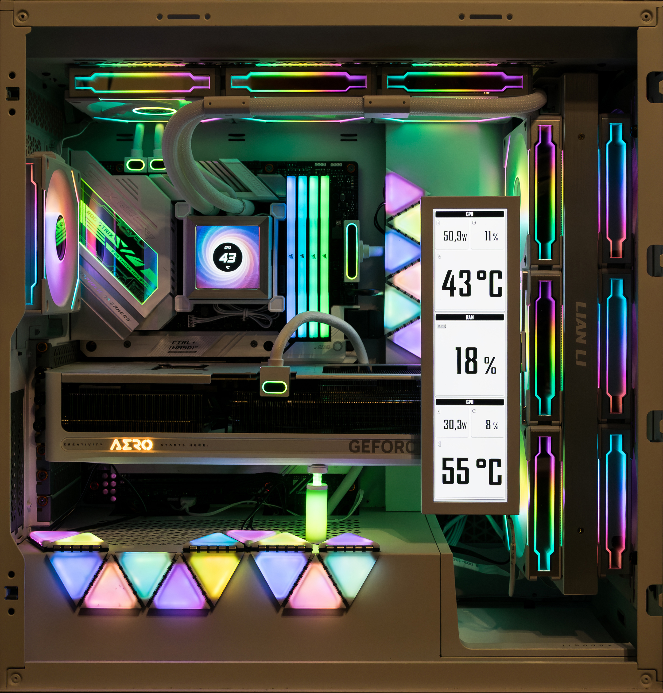

Комплектуючі
Що робить процесор, материнська плата, пам'ять, відеокарта, накопичувачі та блок живлення.
Гайд зі збірки ПК
Короткий гайд для початківців: з яких деталей складається комп'ютер, як їх поєднати між собою та в якому порядку збирати.

Що робить процесор, материнська плата, пам'ять, відеокарта, накопичувачі та блок живлення.
Покрокова інструкція: від підготовки робочого місця до першого запуску.
Що перевірити перед покупкою та які помилки найчастіше роблять початківці.